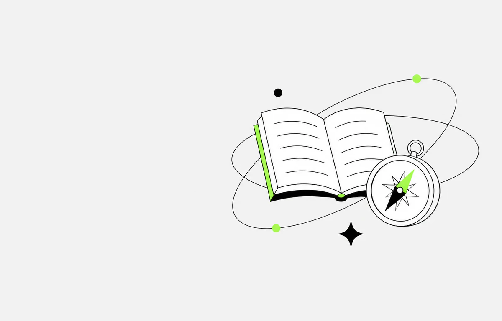

Plan for life after high school
Our free events and mentorship help students prepare for post-secondary education, get practical experience, and see how school connects to future careers.
Free programs across Canada
Luban is a youth-led nonprofit active across multiple Canadian provinces. We help high school students, especially those in underserved communities, prepare for post-secondary education and careers in business.

Our free events and mentorship help students prepare for post-secondary education, get practical experience, and see how school connects to future careers.
Students learn through teaching sessions, competitions, speaker events, and guided conversations with people who can help them plan what comes next.
Luban runs free online and in-person sessions where students can test business ideas, learn from real decisions, and build confidence before university and a career.
Two entrepreneurship teaching events move from understanding the mindset to building a business. Select an event to open its recap or preview.
Completed lesson recap
Students explored what it means to be an entrepreneur and how an entrepreneurial mindset can shape the way they approach opportunities. The lesson also covered practical ways to protect a healthy work-life balance while pursuing ambitious goals.
Upcoming lesson preview
Students will learn how branding, operations, and funding work together inside a successful company. The session will also share resources and opportunities for young entrepreneurs, plus strategies for managing self-doubt and stress.
Our vision is to give more students in underserved communities the chance to explore business. Creative learning and mentorship can help them understand their options, build useful skills and confidence, and prepare for post-secondary education and future careers.
Public schools and underserved communities often have limited funding for hands-on learning and fewer direct connections to people who can explain career options. Luban was created to make practical learning and guidance easier to reach.
Luban runs free online and in-person teaching sessions, competitions, speaker events, and guided networking. Each experience gives students a practical way to explore business, university pathways, and future careers.
We currently focus on students in grades 9 to 11, especially those who have less access to university guidance, business education, and professional networks.
Luban is improving mentor training and seeking a wider mix of funding sources. We are also keeping curriculum standards consistent and developing transparent financial protocols so students can count on reliable, high-quality support.
Students, educators, sponsors, mentors, admission officers, and industry professionals are welcome to reach out. Tell us how you would like to take part or work with Luban.